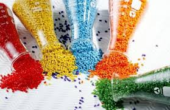
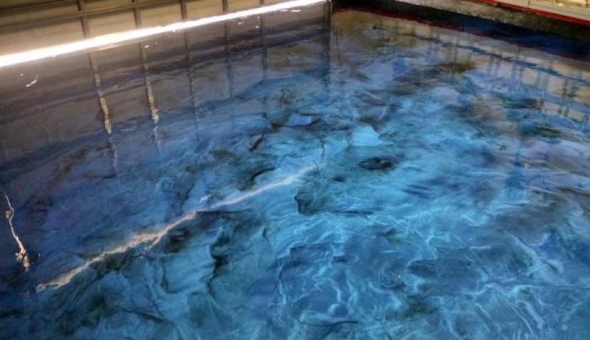
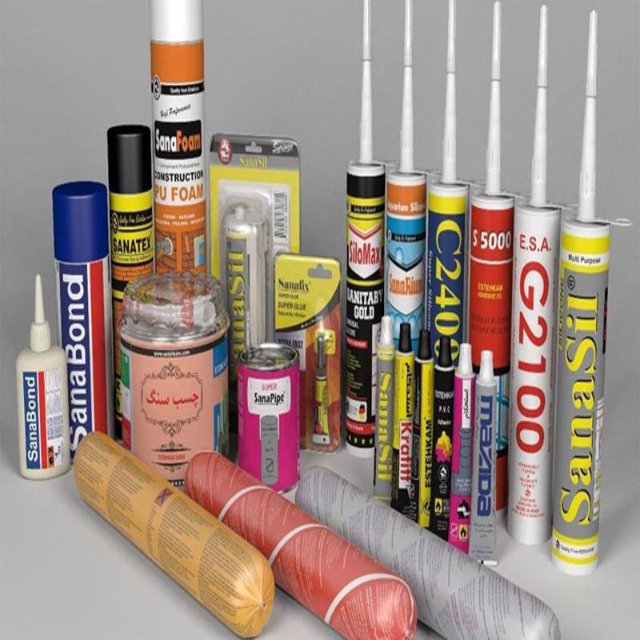
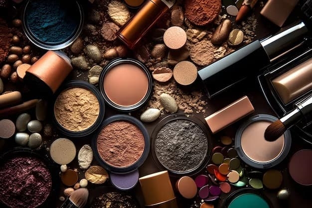

{{ folder }}

صنایع پلیمر
انواع پلیمرها، لاستیک ها، کامپوزیت ها، مستربچ، کامپاند و افزودنی های مربوطه مانند آنتی استاتیک، آنتی یو وی و ...

پوشش ها
مواد اولیه پوشش ها شامل رزین، افزودنی ها، پیگمنت و ... برای انواع مختلف پوشش های ساختمانی، خودرویی، و ...

چسب ها
مواد اولیه چسب ها شامل رزین، افزودنی ها، پیگمنت و ... برای انواع مختلف چسب های پایه آبی و حلالی، فشاری، حرارتی و ...

آرایشی بهداشتی
مواد اولیه محصولات آرایشی بهداشتی شامل رزین، افزودنی ها، پیگمنت و ... برای انواع مختلف محصولات مربوطه